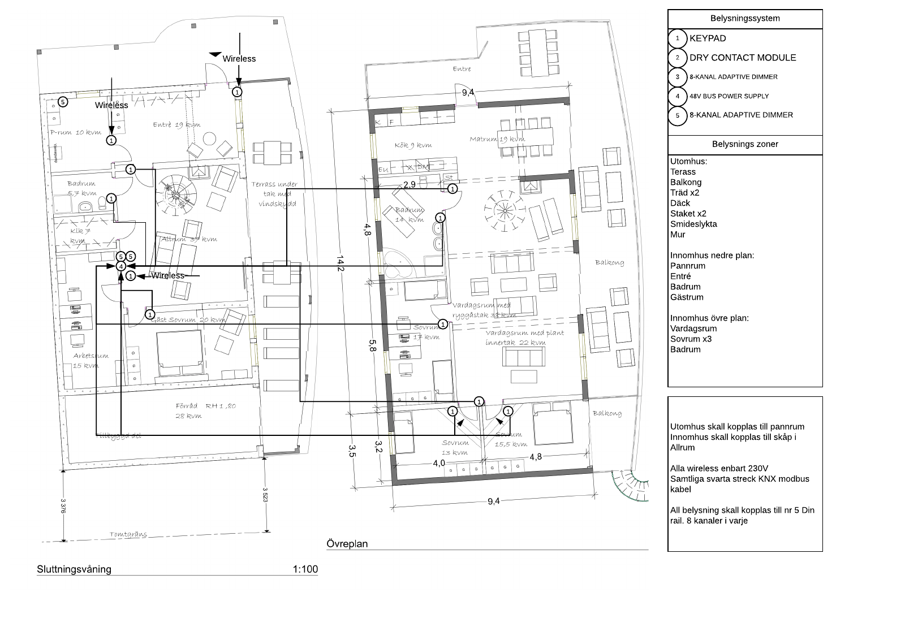
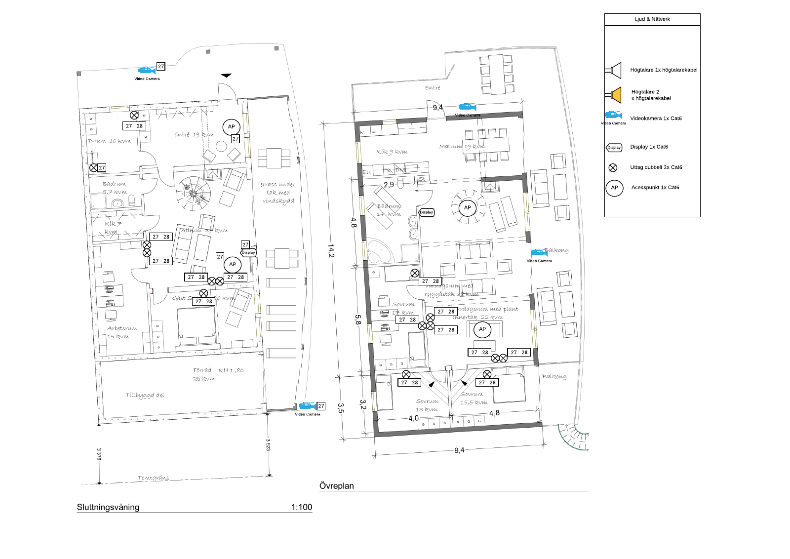

RACKS, CABLING AND DOCUMENTATION
I need to know where the cable goes.
When something fails, I need to find the connection and understand what it does. That starts before the installation, with the plan, and continues through the cable work, configuration, testing and documentation.
At LOBIC, I was the project manager and lead engineer for my customer installations. I did the site survey, design, calculations, quotation and purchasing, then built, configured and commissioned the system. I also trained the customer and continued with support and upgrades afterwards.
At New Wave, I used the same attention to cables, records and access while working with the server rooms and site infrastructure. The settings were different, but the question was the same: if something needs changing quickly, can I find it, understand it and do the work?
01 / SITE SURVEY AND DESIGN
I plan it on paper first.
I start with what the customer needs the installation to do. I visit the site, look at the rooms and the equipment, and turn that into a technical plan. The network, Wi-Fi, speakers, displays, cameras and control system have to fit the same installation.
My planning includes cable routes, rack layout, access-point coverage and speaker placement. I put the equipment positions and connections on the drawings before touching the cables. That gives me something to work from when I calculate the material, prepare the quotation and order the equipment.
The drawings are working documents.
The prints shown here have my notes, numbered connections and equipment positions. They connect the room layout with the installation work. An access point on a floor plan also needs a cable, a network connection and equipment to support it. The same applies to the cameras, displays and audio connections.
I was responsible for both the design and the practical work. If the plan needed changing, I also had to understand what that meant for the materials, the configuration, the cost and the work still to be done.


02 / RACKS AND NETWORK EQUIPMENT
The equipment has to be possible to work on afterwards.
I designed and built racks for network, AV and smart-home systems. The job included deciding where the equipment would sit, how the connections would run and how I could reach them when something needed maintenance or replacement.
I do not want a rack where the only person who understands the connections is the person who built it. Organized cables and clear records matter when someone needs to trace a signal, change a switch or replace a faulty lead. A rack may look finished from the front while still being difficult to work on from the back.
Installing the hardware was only part of the work.
I configured and commissioned firewalls, switches, wireless access points and VPNs, including work with Araknis, EnGenius, Pakedge and Ubiquiti. I worked with VLANs, Wi-Fi coverage and remote access, alongside the AV equipment and Control4 system.
At LOBIC, I also handled the purchasing and the project costs. I needed to know what I was ordering and why it was needed, then make the equipment work together on site. That connected the commercial side of the project with the technical choices and the installation.
03 / CABLE WORK AND TESTING
A cable tester is one of my most important tools.
I fabricated and terminated Cat5e/Cat6 cabling, including crimping and punch-down work, and installed the structured cabling for customer projects. My work also included fibre cables, cable replacement and testing.
I use cable testing as part of the work, not only after everything else has been connected. If something behaves strangely later, I need to know whether the cable was tested and where the result is. I have used Fluke and SignalTEK tools in my network work across customer installations and New Wave.
Even when someone tells me a cable has already been tested, I want the record. It is easy to spend hours looking at equipment and configuration when the connection itself has not been checked properly. I want to be able to go back to the documentation and see what was tested.
My cable comb
I redesigned a cable comb and had a friend 3D-print it for me. I wanted the outer layer to twist while keeping the individual cables accessible, so I could organize the bundle and still find or remove a faulty cable.
The photographs show the tool itself and the comb around a cable bundle during installation. It came from the same practical concern as the rest of my cable work: make the installation organized enough that I can work on it again.


04 / CONTROL4, LIGHTING AND AV
I programmed the system as well as installing it.
My Control4 work covered lighting, AV routing, multi-room audio and smart-home integration. I worked from the customer requirements and the drawings through to the equipment configuration and programming. I completed Control4 Tech 1 certification in 2019.
The lighting plan
The digital plan below shows keypads, a dry-contact module, eight-channel adaptive dimmers and a 48V bus power supply. It separates the indoor and outdoor lighting zones and shows the planned connections. The module report records the lighting equipment and dimmer assignments.
That detail matters because the installation is more than a list of products. The controls need to relate to the lighting zones, the cable work and the way the customer will use the system. I had to connect those parts through the planning, physical installation and programming.
The network and AV plan
The other drawing shows wireless access points, cameras, displays, speaker connections and double Cat6 outlets. It puts the network and AV requirements on the same floor plan, so the equipment positions and connections can be followed during the installation.
I configured the active network equipment and programmed the Control4 system, then tested and commissioned the installation. The customer also needed to understand how to use it. That was part of my handover, together with continued support, upgrades and additional work afterwards.




05 / LABELS AND RECORDS
I use Excel on site, then NetBox.
At New Wave, I used Excel while doing the physical work to record cable names, switches and ports. It let me capture the information quickly instead of moving through one database page after another while working on the installation.
Afterwards I entered or imported those records into NetBox. I could then sit down, follow how the connections fitted together and check anything that did not make sense. If the records showed a possible mistake, I went back and checked the equipment and the connection.
The label needs to lead somewhere.
I use a cable name that connects to the record, with clear equipment and location labels around it. The name on the cable should help me find the connection in the documentation. The record then needs to tell me which equipment and ports are involved.
I also need the labels to be readable. If something has failed and time matters, the information should help me identify the right connection. It should not require the person who originally installed it to stand beside me and explain what they remember.
For me, the spreadsheet, NetBox record, cable label and physical connection are parts of the same job. Keeping one of them updated while leaving the others behind makes the next repair more difficult.
06 / NEW WAVE SERVER-ROOM WORK
I worked with the equipment and the procedures around it.
At New Wave I worked in small server-room environments, deploying and changing equipment, maintaining racks and cables, and working with servers, storage and UPS equipment. It was hands-on work alongside the wider infrastructure and site responsibilities.
I was one of the two people responsible for backups. The work included Arcserve, Dell tape equipment, backup administration and restore drills. I also worked with the team on recovery objectives and the practical equipment changes around the backup environment.
What happened after a cooling failure
We had an air-conditioning failure that required a quick response. Afterwards, we revised the emergency cooling procedures and added monitoring in the room. The incident was a reason to improve the plan for the next response, not leave the knowledge with the people who happened to be there that day.
I was also part of New Wave’s emergency team for critical IT incidents. In that work, organized cabling, equipment records, monitoring and procedures were connected. They helped establish what needed attention and what someone could do next.
07 / PURCHASING AND SUPPLIERS
What can we do together to make it work?
My installation work included quotations, purchasing and supplier coordination. Missing equipment, delayed cables or a promised software fix could affect the rest of the work. I needed to understand the problem and find the next practical step.
My approach is to communicate clearly and look for a solution. Can we get the part elsewhere? Is there a temporary fix? What can we do now, and when will the permanent fix be ready? I want the people involved to understand the problem and what we need from them.
I ask for a commitment in writing, with a date. If it is not delivered, I escalate it. I can be firm and straightforward without losing my temper. Blaming someone does not get the equipment delivered or make the system work.
At New Wave I also used my purchasing experience to find better prices and purchasing channels for IT parts, cables and materials. That experience came from working with both the technical requirements and the cost of the installation.
08 / HANDOVER AND CONTINUED SUPPORT
Someone may need to take over tomorrow.
I test and commission the installation, train the customer and continue with support afterwards. An installation is not the end of the relationship. Customers come back with faults, questions, upgrades and changes to what they need.
I have also continued supporting earlier customer installations remotely. My work included OVRC and network-management tools, and I used AWS EC2 during a trial period for remote management and automation of customer AV and network environments.
The work should not depend on me being there.
I keep the documentation and labels up to date and teach people what I know. I might be unavailable tomorrow, and someone else may need to understand the system. That is why I care about writing down what was done and making the connections clear.
I learned from running businesses that having everything depend on one person is difficult for the person and for the company. I want colleagues to be able to continue the work. The plans, test results, configuration records and handover are part of making that possible.
I cannot publish all of my work because of NDAs, client confidentiality and other restrictions. The examples here are selected from the material I can show.